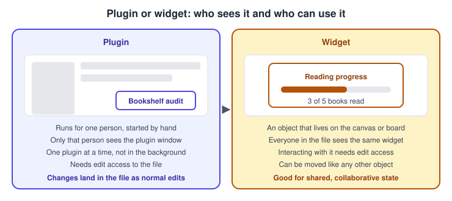
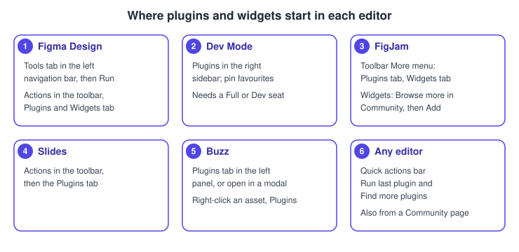
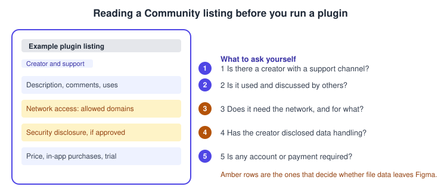

Using Plugins and Widgets
|
This content was generated with the assistance of AI and should be verified against the official documentation before being relied on in production. |
This page was written on 2026-10-30 against the UI3 interface of Figma Design, Dev Mode, FigJam, Figma Slides and Figma Buzz. Plugins and widgets are general availability features that come from the Figma Community, which is available on all plans. Running a plugin or adding a widget needs edit access to the file, and which editors a plugin can run in depends on your seat: Figma Design needs a Full seat (or a Starter plan), Dev Mode needs a Full or Dev seat, and View seats cannot run plugins at all. Generative plugins and shaders are a separate, newer feature that is described near the end and is still in beta in part. Seats and plans are summarised on Plans, Seats and AI Credits.
A plugin is a small program written by a Community member that reads or changes the content of the file you are working in. A widget is an interactive object that sits on the canvas or board and that everyone in the file can see and use. This page is about using them; building your own is covered on Building Plugins and Building Widgets. The running example is the Bookshelf app: you audit its colours with a plugin and track a team reading goal with a FigJam widget.
Source: Figma Developer Docs: Plugins
Plugins versus widgets

The practical differences are these.
-
A plugin performs one or more short-lived actions that you start. You can run only one plugin and one action at a time, and plugins cannot run in the background. Other people in the file cannot see which plugins you ran.
-
A plugin can run immediately, or it can ask for parameters through the quick actions menu, and it can open its own window with a custom interface.
-
A widget stays in the file as an object. It can be moved like other objects, and it can edit or interact with other layers and objects, and read file data such as layers, usernames, avatars, cursor positions and the viewport.
-
Both need edit access to the file. Widgets are available in Figma Design and FigJam boards.
Finding plugins and widgets
Browse the Community at figma.com/community or from the file browser. The file browser version gives recommendations based on the role set in your account settings. You can search by name, tags or profile handle, browse by feature category, and filter results by Files and templates, Plugins, Widgets, Apps or Creators. Each Community page shows the description, comments and the creator’s contact information, and you can like and save the resource there. The second number next to the heart is the number of uses, which is a rough sign of adoption and not of quality. Apps are different from plugins: they run on third-party platforms and ask you to authenticate your Figma account.
Admins on the Organization and Enterprise plans can manage access to Community resources, so if the Community page is missing from the file browser an admin may have turned it off.
Where plugins and widgets start in UI3

-
In Figma Design, click the Tools tab in the left navigation bar. Use the Filter by price and type icon and filter by Plugin; the Source and Category dropdowns narrow the list. Open a plugin’s details and click Run.
-
In Dev Mode, click Plugins in the right sidebar and choose a recent, saved or Community plugin. In the Plugins tab, the More menu of a plugin offers Pin to top and Unpin from top, and plugins pinned for your organization also appear there.
-
In FigJam, hover over the pile of recently used icons in the toolbar, click More, open the Plugins tab, select a plugin and click Run.
-
In Figma Slides, click Actions in the toolbar, open the Plugins tab and click a plugin.
-
In Figma Buzz, open the Plugins tab in the left panel and click a plugin. It opens in the panel, or you can choose Open in a modal. You can also right-click an asset and choose Plugins.
-
From a Community page, click Open in (or Buy for a paid plugin), choose a recent file or New file, and choose where to open it if prompted.
Widgets are added from Actions in the toolbar, in the Plugins & Widgets tab, in Figma Design, and from the More menu, Widgets tab, in FigJam, where you click Add.
Shortcuts and quick actions
| Action | macOS | Windows |
|---|---|---|
Run the last plugin |
Command + Option + P |
Alt + Control + P |
Open the quick actions bar |
Command + / |
Control + / |
Find more plugins |
Quick action only, no shortcut |
Quick action only, no shortcut |
Find more widgets, Select all widgets |
Quick action only, no shortcut |
Quick action only, no shortcut |
Individual plugins can add their own quick actions, so check each plugin’s description. The Actions menu in the toolbar (Command or Control + K in the UI3 baseline) is another way to reach plugins and widgets; I did not verify that it lists exactly the same quick actions as the quick actions bar.
Procedure: audit the Bookshelf colours with a plugin
-
Open the Bookshelf design file in Figma Design with a Full seat or on a Starter plan.
-
Select the frames you want to check on the canvas.
-
Click the Tools tab in the left navigation bar, filter by Plugin and search for a colour or contrast checker.
-
Open the details of a candidate and read its Community page using the checklist in the next section.
-
Click Run. If the plugin has a window, it opens over the canvas; make your changes in the file as usual.
-
Close the plugin when you are done. To repeat the run later, press Command + Option + P on macOS or Alt + Control + P on Windows.
Procedure: add a widget to a FigJam board
-
Open the team’s Bookshelf planning board in FigJam.
-
Hover over the pile of recently used icons in the toolbar and click More.
-
Open the Widgets tab. Choose a recent widget, or click Browse more in Community.
-
Click the name of the widget to read its details, then click Add to place it on the board.
-
Move the widget like any other object. Everyone with edit access, including visitors in an open session, can interact with it.
-
To clear every widget from a file, right-click the board, hover over Widgets, click Select all widgets and press Delete on macOS or Backspace on Windows.
Permissions and privacy
A plugin you run can read and modify the file you opened it in, so treat running a plugin as granting it access to that file. Figma’s review guidelines say a plugin may not read or modify a file without the user’s explicit awareness and consent, that customer data must be protected, and that a plugin which processes user data needs a privacy policy. The guidelines also say developers must provide their own support channel, that any separate account or payment a plugin needs must be clear in its description, and that Figma may reject plugins that are internal-only, duplicate core Figma features or work around paid offerings.
Network access is declared by the developer. A plugin’s manifest can list the domains it may contact; Figma then blocks requests to any other domain and throws a content security policy error. The reason the developer gives and the list of allowed domains are shown on the Community page. A fragment of a manifest looks like this, with a placeholder domain.
{
"name": "Bookshelf colour audit",
"networkAccess": {
"allowedDomains": ["https://api.example.com"],
"reasoning": "Loads the Bookshelf brand palette from the team's server."
}
}Developers can also complete Figma’s optional security disclosure form, a programme that is in open beta. After Figma approves it, logged-in users can read the disclosure on the plugin’s or widget’s Community listing. Review can take up to two weeks. I could not verify the exact wording of the label shown on the listing, so look for the disclosure on the Community page itself. A missing disclosure does not mean a plugin is unsafe, and an approved one does not replace your own judgement, so read it alongside the network access section.

Choosing a plugin
Pick by the job and by evidence of upkeep, not by popularity alone. The flow below summarises the questions to ask in order.
Practical rules that follow from the sources:
-
Prefer native features first. Variables, styles, auto layout and Dev Mode replaced several jobs that plugins used to do, as the section below explains.
-
Check that the creator offers a way to get support, that the listing is described accurately, and that comments and uses suggest recent activity. Updates apply to everyone who has the plugin installed and users cannot roll back to an earlier version.
-
A plugin removed from the Community stops working for everyone who installed it, without a notification, so do not make a delivery depend on a single unmaintained plugin.
-
Paid plugins marked "In-app purchases" may include a free trial. Prices are set by the creator and change, so read the listing and do not rely on a guide.
-
Try a new plugin on a duplicate of the file or on a scratch page, because it can modify content.
-
Alternatives: a plugin that does one thing with no network access is a lower-risk choice than a broad one that sends data elsewhere.
Plugin choice by task, in terms of what to look for (named third-party plugins change often and are not endorsed here):
| Task | What to check |
|---|---|
Contrast and accessibility checks |
A recent update, and whether the check matches the WCAG levels in Accessibility; compare with Accessible and Inclusive Design |
Placeholder content and images |
Whether it needs the network, and the licence of any images it inserts |
Design tokens and variables |
Whether it reads native variables, as described on Design Tokens; Tokens Studio is a third-party plugin that predates native variables |
Handoff and code generation |
Dev Mode codegen plugins run in Dev Mode with a Full or Dev seat; see Dev Mode |
Team rituals in FigJam |
A widget when the whole board should see and edit the state; see FigJam |
Managing plugins in an organization
Admins on the Education (K-12), Organization, Government and Enterprise plans can control which plugins and widgets members use. By default, members can find and use them without approval.
-
In the file browser, click Admin, then the Settings tab.
-
Under Extensions, click Plugin approval or Widget approval and select "Only admin-approved plugins" or "Only admin-approved widgets".
-
Leave Allow members to request plugins (or widgets) checked if members should be able to ask for others.
-
To approve an item, copy its Community link with Copy link in the Share section, then go to Admin, Resources, Plugins, click Add plugin or Add widget, paste the link and click Add. On Enterprise you can limit the approval to chosen workspaces.
-
To remove an item, open it under Admin, Resources and click Remove on the Organization plan, or Edit approvals on Enterprise. Access stops immediately.
Updates do not need approval again, but admins receive an email if an update changes network access or the security disclosure. Enterprise admins can open the Usage tab of an item to see run counts, users and workspaces. These settings do not apply to private plugins and widgets published inside your own organization. On Figma for Government, only admin-approved third-party plugins are available.
Generative plugins and shaders
Since mid-2026 the Figma agent can create shaders and generative plugins from a prompt, and they appear in the Tools tab alongside Community items. Set the Source dropdown to From Figma to browse the ones built by the Figma team. Shaders come as shader fills and shader effects, and creating them uses AI credits while applying them does not, according to Figma’s help centre. The sources I read disagree on exactly which plans include generative plugins, and shaders are described as being in open beta, so check the current guide before depending on them. See The Figma Agent and Skills and Figma AI Tools.
What older guides get wrong
-
Guides written for the old interface (UI2) point to menus and buttons such as the Resources button and the Assets panel that no longer exist. UI3 has been the only interface since 2025-04-30, and the left navigation bar changed again on 2026-01-07, which is where the Tools tab now sits.
-
The seat model is now Full, Dev, Collab and View since 2025-03-11. Guides that say "editor" and "viewer" predate it, and the table above shows how it affects who can run a plugin.
-
Third-party plugins named in older books may no longer be maintained, so verify each one on its Community page before following a chapter. The "Figma Tokens" plugin of older books is now the third-party Tokens Studio plugin, and native variables, GA since 2024-04-16, cover much of what it did first.
-
Lottie export came from third-party plugins before 2026. Figma Motion now exports Lottie, dotLottie, MP4, WebM and GIF natively; see Figma Motion.
-
Widgets were a brief topic in older books. They are still the way to share live state in FigJam and Figma Design, but not in Dev Mode or Figma Slides, where the sources I read do not describe them.
Next steps
-
Build your own: Building Plugins and Building Widgets.
-
Automate from outside Figma: REST API and Webhooks.
-
Publishing and sharing design resources: Libraries and Publishing.